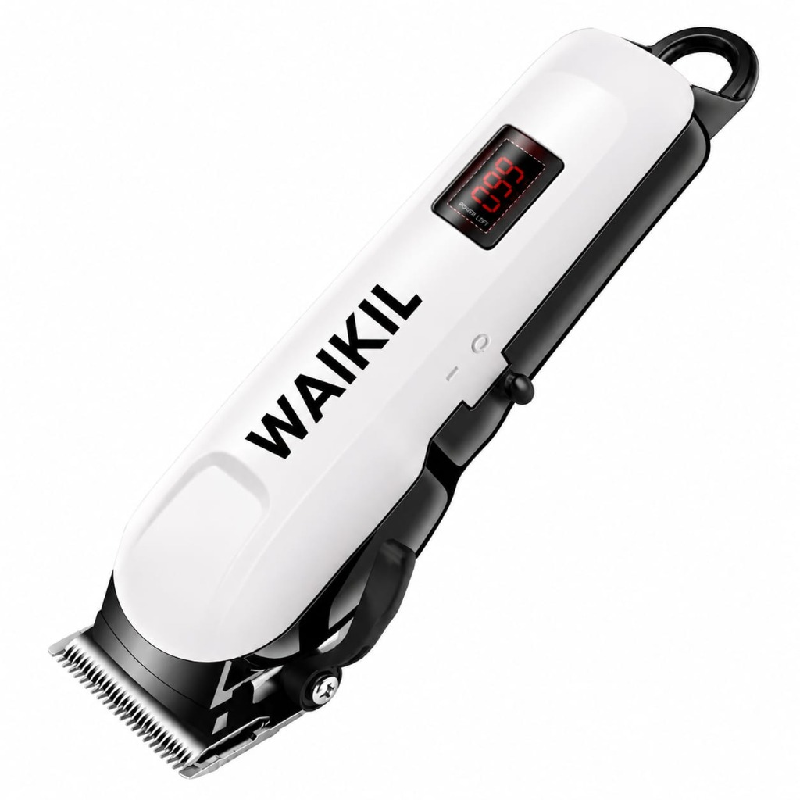
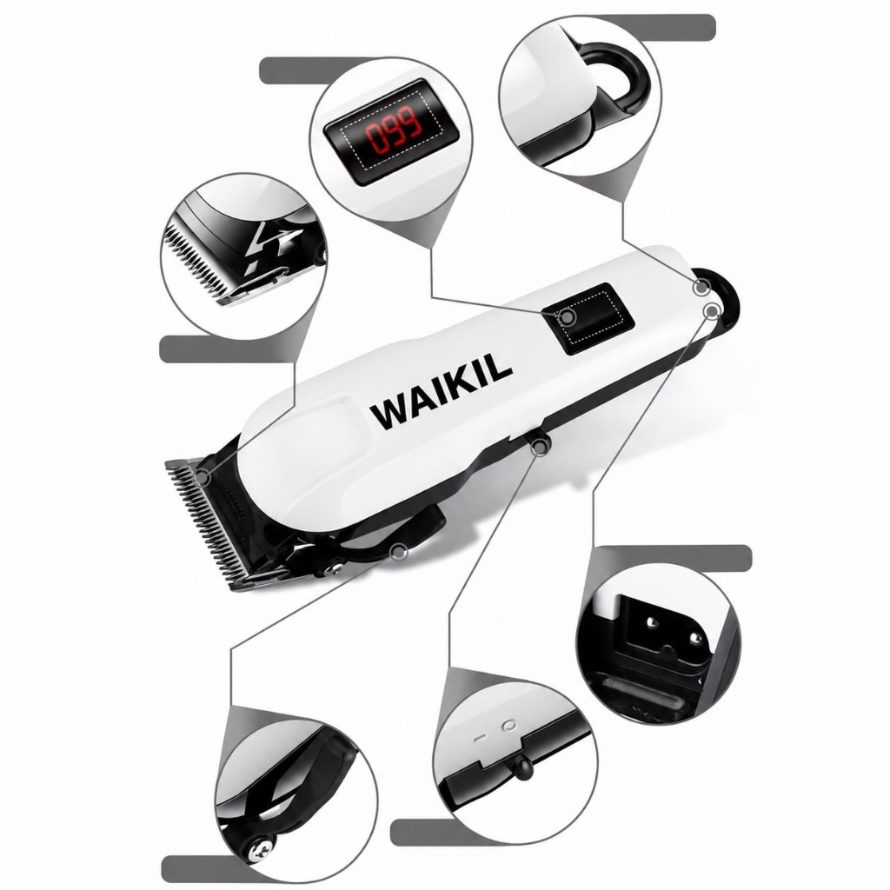
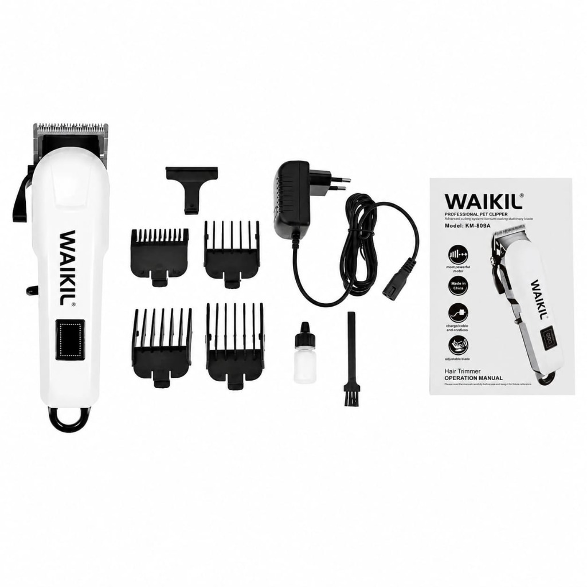

Tondeuse Professionnelle Ajustable (WAIKIL KM-809A)
La tondeuse de référence pour une tonte ultra-précise et puissante. Équipée d'un moteur de 12W, d'un écran LCD affichant le pourcentage de batterie restant, d'un levier de réglage latéral et livrée avec son kit de coiffure complet de 4 sabots.
⚡ Formulaire de Commande Express
Remplissez vos coordonnées pour être livré gratuitement à domicile ou au bureau.
Une tondeuse de niveau professionnel pour la maison
Vous recherchez la puissance d'un salon de coiffure avec le confort d'un rasage à domicile ? La tondeuse WAIKIL KM-809A est conçue avec un puissant moteur de 12W capable de couper les cheveux les plus épais sans aucun effort, tout en restant extrêmement silencieuse.
💡 Ses atouts majeurs :
Écran LCD Intelligent
Affiche le pourcentage exact de batterie disponible (de 0 à 100%). Ne soyez jamais pris de court au milieu d'une coupe.
Levier Ajustable Précis
Ajustez facilement la hauteur des lames à l'aide du levier latéral. Parfait pour réaliser des dégradés impeccables sans changer de sabot.
Kit de Coiffure Complet Inclus
Votre tondeuse WAIKIL KM-809A est livrée avec tous les accessoires indispensables : 4 sabots de coupe de longueurs différentes (3mm, 6mm, 10mm, 13mm) pour varier vos styles, son chargeur adaptateur secteur robuste, un capot de protection des lames, une brosse de nettoyage et un flacon d'huile de maintenance.
| Caractéristique | Spécification Réelle |
|---|---|
| Type d'appareil | Tondeuse électrique professionnelle sans fil (et utilisable avec fil) |
| Puissance moteur | 12W haute efficacité et coupe rapide |
| Autonomie | Batterie Lithium-ion rechargeable offrant de 120 à 240 minutes d'utilisation continue |
| Écran de contrôle | Affichage numérique LCD pour le niveau de batterie (en %) et indicateur de charge |
| Lames | Acier inoxydable haute précision avec levier d'ajustement latéral (0,5 mm à 15 mm) |
| Sabots fournis | 4 guides de coupe interchangeables (3, 6, 10 et 13 mm) |
| Alimentation | Chargeur secteur robuste (100V-240V universel), fiche européenne standard |
Livraison Gratuite & Rapide
Zéro frais de port ! Livraison 100% gratuite sous 24h à 48h à Ouagadougou et Conakry par nos livreurs dédiés. Pour l'intérieur, livraison via gares routières partenaires.
Paiement Sécurisé COD
Paiement à la livraison ! Vous ne payez rien en ligne. Vous réglez la somme en espèces directement au livreur après avoir ouvert et vérifié votre colis.
Garantie Qualité de 7 Jours
Toutes nos tondeuses sont testées avant livraison. En cas de défaut technique constaté sous 7 jours, nous procédons à un échange gratuit ou un remboursement.
Moyenne basée sur 28 retours clients vérifiés au Burkina Faso et en Guinée
"Cette tondeuse est fantastique. Le moteur est vraiment puissant de 12W, rien à voir avec les petites tondeuses ordinaires. L'écran qui indique la batterie à 100% est hyper pratique. Très bon achat à 11 000 FCFA avec livraison gratuite."
"La tondeuse coupe très bien et le réglage latéral de la hauteur est très solide. Le câble de charge est long et on peut l'utiliser directement branchée si on veut. Livrée en 24 heures chez moi."
"Super qualité ! J'ai commandé le pack de 2 tondeuses à 20 000 FCFA pour moi et mon fils. Reçu en parfait état via bus TSR, très bien emballé. Je recommande vivement."
Questions Fréquentes
Des questions sur la tondeuse WAIKIL ? Voici nos réponses.
Oui, absolument ! Cette tondeuse dispose d'un double mode d'alimentation. Vous pouvez l'utiliser de manière autonome sans fil ou la brancher directement sur une prise électrique avec son chargeur secteur si la batterie est à plat.
L'écran LCD s'allume automatiquement lorsque la tondeuse est sous tension. Il affiche un chiffre de 0 à 100 correspondant au pourcentage restant d'autonomie de la batterie, ce qui vous indique précisément le moment où il faut la recharger.
La tondeuse est livrée avec 4 guides de coupe interchangeables de tailles standard : 3 mm, 6 mm, 10 mm et 13 mm, vous permettant de réaliser des tontes de cheveux et de barbes de différentes longueurs de manière très précise.